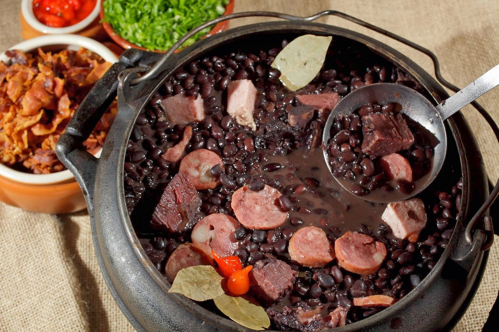

____
Традиционная еда
Баксо нудл суп (Bakso Noodle Soup) — знаменитый суп, популярный в Восточном Тиморе и Индонезии. Состоит из лапши рамэн, бок чой, листьев сельдерея, курицы баксо и тофу во фритюре.
")
Батар даан (Batar daan) — популярное в кухне Восточного Тимора блюдо из кукурузы, бобов мунг и тыквы.
Икан сабуко (Ikan sabuko) — испанская скумбрия в маринаде из тамаринда с базиликом и паприкой.
Тапай (Tapai) — ферментированный рис. На вкус тапай кисло-сладкий и слегка алкогольный. Также из него делают алкогольные напитки.
")
Фейжоада (Feijoada) — распространенное во многих бывших португальских колониях блюдо, готовится из свинины, бобов и чоризо.

Бибинка (Bibinka) — традиционный для кухни Восточного Тимора жареный на гриле слоеный кокосовый пирог.
____